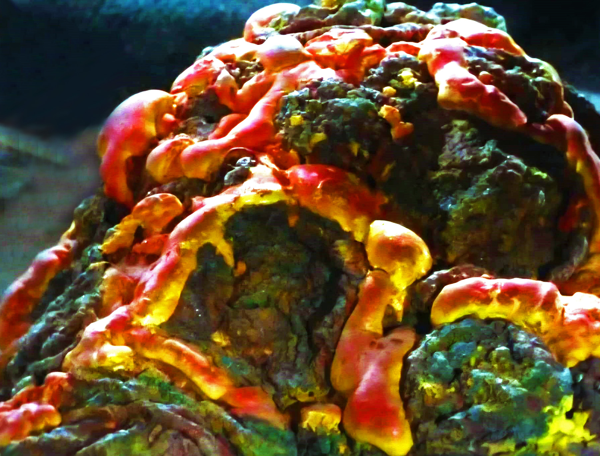

FOTO
Ammiraglio Terenzio Colbotto
Ufficio Controlli Salute Mentale
Comando Flotta Stellare
San Francisco - Sol III
e p.c. Cap. Giuseppe Alighieri
USS Afrodite - NCC-1863
Come richiestomi dal Comando di Flotta, invio rapporto riguardante colloquio privato con Dr. Comm. Proff. Egr. Sup. Bottino.
Alle ore 16:00 del 1 Aprile u.s. mi sono incontrata col suddetto Dr. Comm. Proff. Egr. Sup. Bottino nel suo studio privato messogli a disposizione dal Cap. Alighieri
che volentieri ha ceduto la sua cabina atta all'uopo.
Il Dr. Comm. Proff. Egr. Sup. Bottino ricevevami sito su alto scanno e facevami cenno di accomodarmi su chaise long disposta nel mezzo della stanza.
Circa mezz'ora dopo, visti inutili miei tentativi di accomodarmi su detta chaise long, il Dr. Comm. Proff. Egr. Sup. Bottino acconsentiva benignamente di farmi accomodare per terra davanti suoi piedi,
iniziavasi ora a pormi domande atte a stabilire mio grado di salute mentale:
Quanto fa sette per otto?
A domanda rispondevo: Un momento che ho ancora tutti i gangli indolenziti dal tentare di scalare quel divano, mi dia cinque minuti che poi riesco a contare.
Di quanti gradini è composta la scala per arrivare al suo alloggio?
A domanda rispondevo: è questo il mio alloggio, se non lo sa lei!
Vi sono animali sulla nave? Se sì: quanti?
A domanda rispondevo: Dal mio personale punto di vista siliceo, di animali su questa nave ce ne sono un paio di centinaia, più o meno pelosi.
Ha mai preso a testate un comignolo?
A domanda rispondevo: Un che? (nda Nel XXIII secolo dubito che i comignoli pullulino).
Descriva con parole semplici i vostri sentimenti riguardo le Nebule.
A domanda rispondevo: Sgrumble ponfa zock @#$%^&$@^*&^###*&@!!#. Abbastanza semplici così?
Ha visto qualche bel film ultimamente?
A domanda rispondevo: "Le follie dell'Imperatore", sì, sto attraversando un periodo della mia vita dove la dinamica intellettuale ha avuto una battuta d'arresto.
È soddisfatto del suo Capitano?
A domanda rispondevo: Sono soddisfattissima del mio Capitanuccio slurpino, soprattutto dopo che ha mangiato del peperoncino con le ostriche.
Fa mai sogni concernenti i suoi Professori d'Accademia?
A domanda rispondevo: Sì, e di solito riguardano una sega ai protoni, un barile di pece e un sacco di piume. Comunque sono sogni che mi sono utilissimi per prendere spunti
per la prossima azione del Commando, e stavolta altro che alla sedia dovranno aggrapparsi. Harg harg harg (risata diabolica - nda).
Di che colore è la sua uniforme?
A domando rispondevo: Non vorrei scioccarla ma vede io... ehm... vado in giro, come dire... nuda. Però per le occasioni ufficiali ho una magnifica mantella bianca con bandana annessa.
Qual è il codice a barre del chinotto?
A domanda rispondevo: || ||| | || ||||| | |||
Avendo esaurito il colloquio, il Dr. Comm. Proff. Egr. Sup. Bottino mi ha congedata.
GM Frruuu
Primo Ufficiale
USS Afrodite - NCC-1863